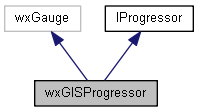
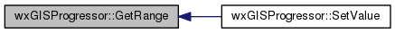

|
|
Version: 0.5.0 |


wxGISProgressor Class Reference
The progressor (gauge) class. More...
#include <progressor.h>
Inheritance diagram for wxGISProgressor:

Collaboration diagram for wxGISProgressor:

Public Member Functions | |
| wxGISProgressor (wxWindow *parent, wxWindowID id=wxID_ANY, int range=100, const wxPoint &pos=wxDefaultPosition, const wxSize &size=wxDefaultSize, long style=wxGA_HORIZONTAL|wxGA_SMOOTH, const wxString name=wxT("GISProgressor")) | |
| virtual bool | ShowProgress (bool bShow) |
| Show/hide progressor. More... | |
| virtual void | SetRange (int range) |
| Set progressor range. More... | |
| virtual int | GetRange () const |
| Set progressor range. More... | |
| virtual void | SetValue (int value) |
| Set progressor position. More... | |
| virtual int | GetValue () const |
| Get progressor position. More... | |
| virtual void | Play (void) |
| Start undefined progressor state. | |
| virtual void | Stop (void) |
| Stop undefined progressor state. | |
| virtual void | SetYield (bool bYield=false) |
| SetYield Yields control to pending messages in the windowing system. More... | |
| virtual void | OnSetValue (wxCommandEvent &event) |
 Public Member Functions inherited from IProgressor Public Member Functions inherited from IProgressor | |
| virtual | ~IProgressor (void) |
| A destructor. | |
Protected Attributes | |
| int | m_nValue |
| bool | m_bYield |
Detailed Description
The progressor (gauge) class.
Member Function Documentation
|
virtual |
Set progressor range.
- Returns
- The current progressor range
Implements IProgressor.
Here is the caller graph for this function:

|
virtual |
|
virtual |
|
virtual |
Set progressor position.
- Parameters
-
value The progressor current value
Implements IProgressor.
Here is the call graph for this function:
|
virtual |
SetYield Yields control to pending messages in the windowing system.
This can be useful, for example, when a time-consuming process writes to a text window. Without an occasional yield, the text window will not be updated properly, and other processes will not respond.
Implements IProgressor.
|
virtual |
Show/hide progressor.
- Parameters
-
bShow The indicator to show (true) or hide (false) progressor
- Returns
- The success of function execution
Implements IProgressor.
The documentation for this class was generated from the following files:
- D:/work/projects/wxGIS/include/wxgis/framework/progressor.h
- D:/work/projects/wxGIS/src/framework/progressor.cpp
- Generated on Mon Oct 28 2013 04:47:59 for wxGIS by
 1.8.5
1.8.5